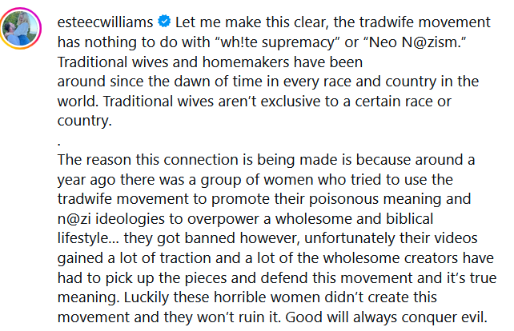
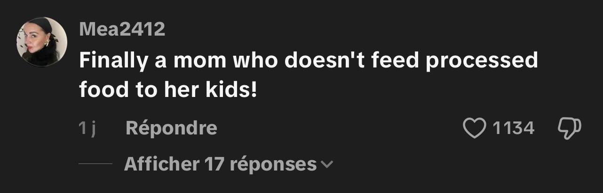
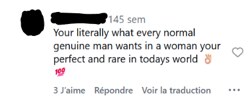

Ancrage idéologique
Une esthétique glamour dissimulant un ancrage conservateur
Des quatre tradwives que nous avons étudiées, aucune ne revendique d’étiquette politique particulière, ou du moins pas explicitement : Nara Smith rejette directement l’étiquette de tradwife, Ballerina Farm ne s’identifie pas comme telle, Estee Williams s’y identifie mais nie toute association à des mouvements d’extrême droite, et The Healthy Wife prône simplement l’adhésion à des valeurs traditionnelles sans s’identifier à ce label.
Les tradwives veulent donc s’affranchir de toute connotation politique trop clivante, en justifiant leur mode de vie traditionnel par un choix personnel libre et conscient — Nara Smith et The Healthy Wife — ou une vision plus religieuse — Ballerina Farm et Estee Williams. Elles disent préférer la tranquillité et la joie d’un foyer aux lourds impératifs du monde du travail (Stotzer & Nelson, 2026).
Pourtant, cette association politique n’est pas sans fondement. L’étude de l’audience des tradwives ne laisse pas de doute sur le sujet : les commentaires de soutien sont souvent teintés d’une dimension politique évidente. Ils montrent que les tradwives normalisent, consciemment ou non, des idées antimodernistes, conservatrices, voire parfois réactionnaires.







Ces idées font partie intégrante de l’idéologie néoconservatrice américaine, un courant politique qui vise à défendre l’héritage américain contre le progressisme et le libéralisme (Chelini-Pont, 2013). Dans la vision des penseurs néoconservateurs, le corps de la femme est instrumentalisé au service de la pérennité de la race blanche (Burns & Zacharek, 2026). L’objectification du corps féminin et la critique du libéralisme progressiste sont deux idées qui reviennent dans les commentaires de soutien aux tradwives.
La présence de cette communauté néoconservatrice aux côtés des tradwives montre que leur importance dans la diffusion de ces idées n’est pas uniquement passive. Les quatre influenceuses mettent en scène le rôle traditionnel de la femme au foyer — qui s’occupe des enfants, fait plaisir à son mari et lui est soumise — avec une esthétique douce et vendeuse (Pilyarchuk & Graf, 2026).
Leur discours, bien que se voulant apolitique, reflète souvent des valeurs conservatrices, d’ordre religieux ou non. Deux des quatre créatrices étudiées se revendiquent chrétiennes. Estee Williams souhaite incarner l’idéal d’une « biblical womanhood ». The Healthy Wife porte quant à elle un discours explicitement antilibéral sans dénoncer un système ou une idéologie particulière : « We were pushed out of the home. We were pushed into the workplace… ». Nara Smith est la seule à dire ne pas partager ces idées conservatrices : « He does the dishes, I’ve never touched the dishes », « I’m a working mom ».
Ainsi, la majorité des tradwives, dans leur esthétique ou leur discours, s’assurent de ne jamais en dire assez pour assumer clairement des idées politiques potentiellement clivantes, tout en signalant leur position conservatrice aux membres de leur communauté qui partagent déjà ces codes sociaux. Dans un monde où les réseaux sociaux régissent profondément la manière dont on se représente soi ou autrui (Ghali & Mouddene, 2025), elles jouent un rôle dans la normalisation et la diffusion de l’idéologie néoconservatrice, dissimulée sous une esthétique glamour ou des vidéos de cuisine d’apparence apolitique.